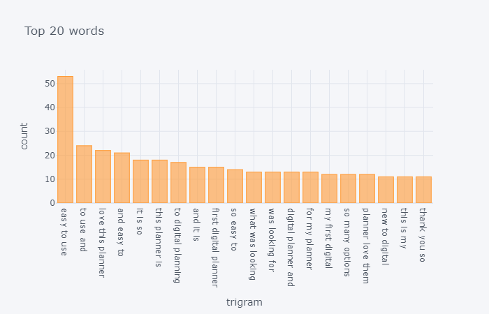

About
A 4th year student at the University of Iowa that specializes in data collection and analysis. Excellent understanding and proficiency
in python, SQL, and spreadsheets. Strong communicational, data modeling, organizational, and analytical skills. Aside from analytics,
I enjoy playing games, learning new things, and working on my own projects.
Projects
Project 1: Automated Stock News Research
Created a python script where it would webscrape, summarize, and give a sentiment analysis of articles off of yahoo news.
The script grabs the top 5 articles from yahoo news if you search a stock ticker through google. It then grabs the URLS and will clean
the unwanted URLS and store the urls in a dictionary. Once the links are stored. It will get passed through a function that will
grab the article and summarizes it into a short sentence. After it would give a sentiment analysis of the based on the summarize text
telling me if the particalar news article was positive or negative. I made this script because I when I was trading in the stock market
I rarely looked at the news. I wanted to know what was going on with the stock I was trading to see if I should go long (buy) or short (sell).
This script would help me do that by giving me a quick overview
of the news for the stock I was planning to trade.
Project 2: Etsy Product Review Analysis
Created a python script that would use the etsy API and get top 900 reviews on a digital planner product. It would then be used to perform text analysis
to see what the top words were used in the reviews. I made this script because I was interested in text analytics and I also had a friend that wanted to
make a digital planner to potentially put on ETSY. So I made this script that would help see what people were looking for in a digital planner and apply their
responses to the digital planner my friend was going to make.

Contact
Resume